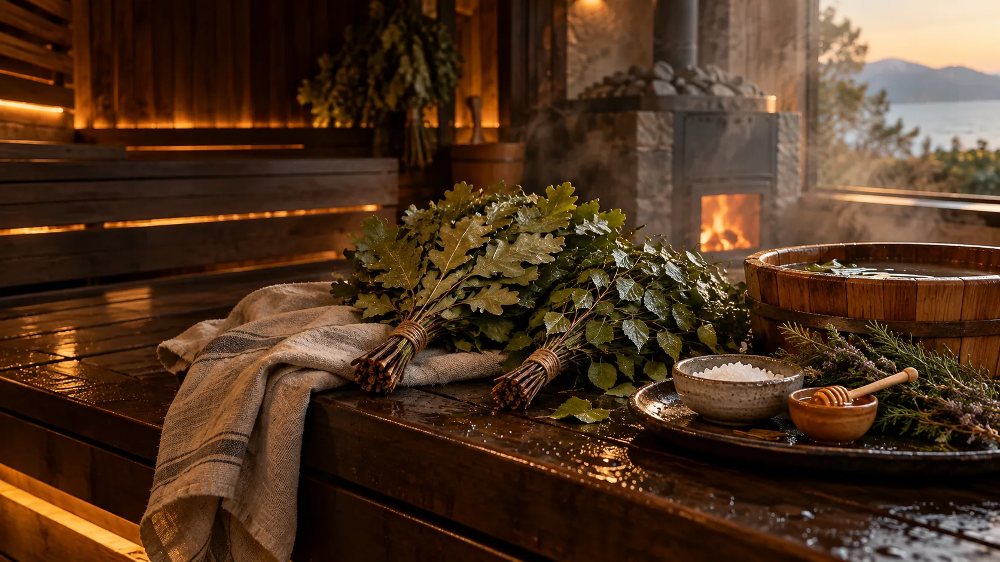

01 / БАННЫЙ ДЕНЬ
В парной
с пармастером
Начнем с мягкого пара и трав. Пармастер узнает, какой жар вы любите, и подберет программу под вашу компанию.
Обсудить банный деньХОД БАННОГО ДНЯ
Заходы в вашем ритме
- 01
Первый пар
Мягкое аромапарение с травами. В парной пармастер спрашивает гостей о температуре, ароматах и процедурах, которые им интересны.
- 02
Своя программа
Дубовый или березовый веник, подходящая сила пара и паузы между заходами. Количество заходов решаете вместе с пармастером.
- 03
Отдых после жара
Банная мойка, массаж или уход по желанию. После парной можно остаться на чай и ужин.

02 ПРОДОЛЖЕНИЕ БАННОГО ДНЯ
Массаж после пара
Уход, массаж и банную мойку обсуждаем заранее. Пармастер уточнит ваши пожелания перед началом.
Выбрать процедурыЧАСТНЫЙ ЗАПРОС
Ваш день в Сочи
Расскажите о дате и гостях. Подберем площадку, обсудим парение и меню, затем согласуем стоимость.
Обсудить банный день